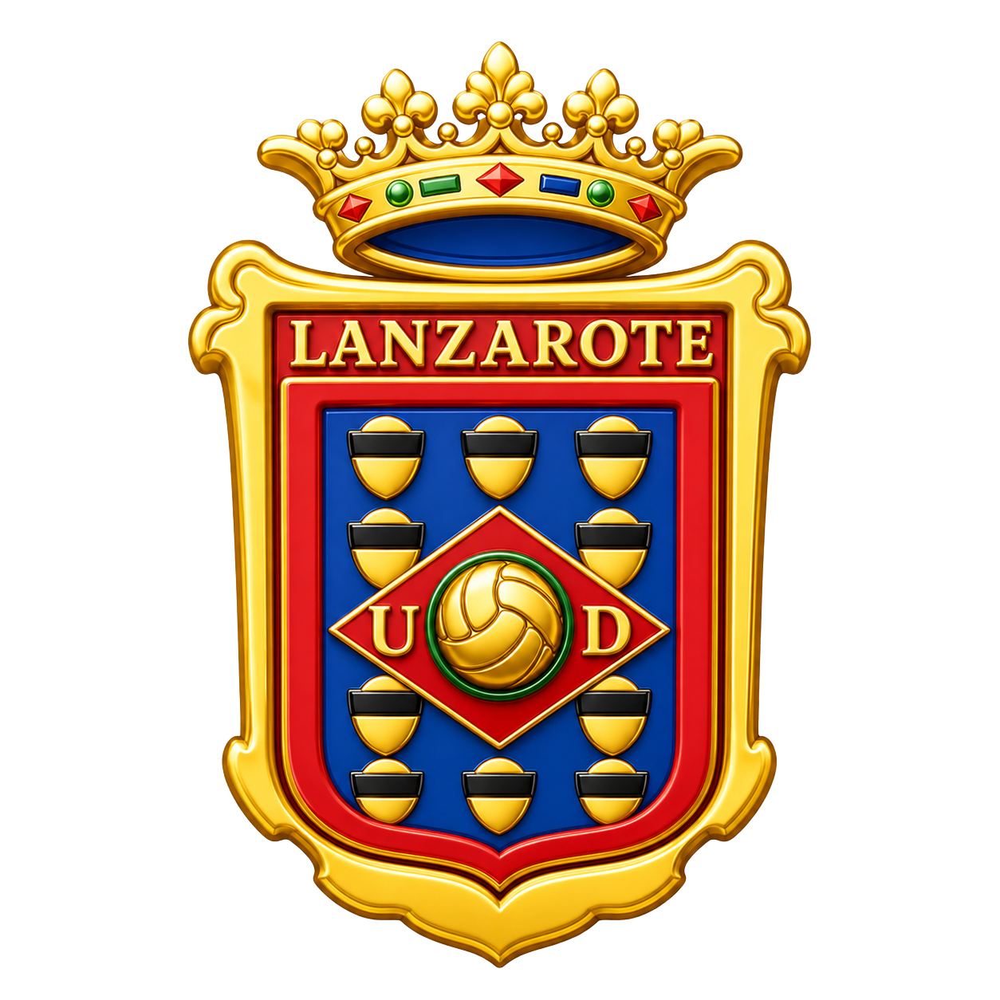
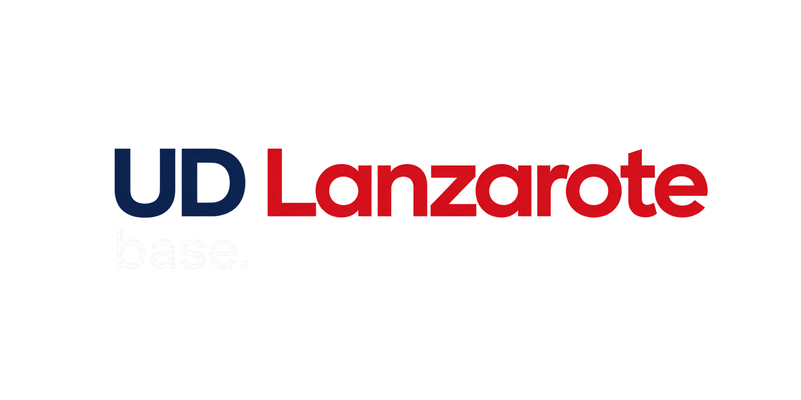
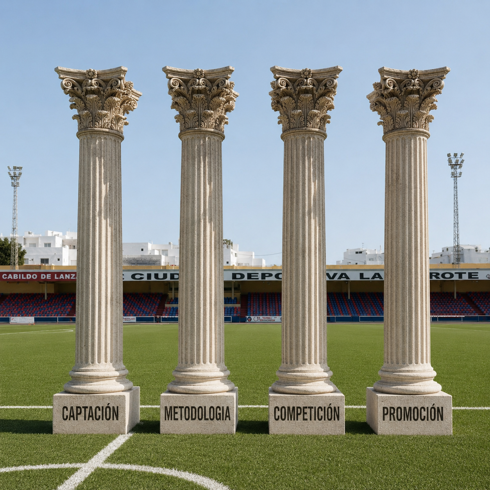
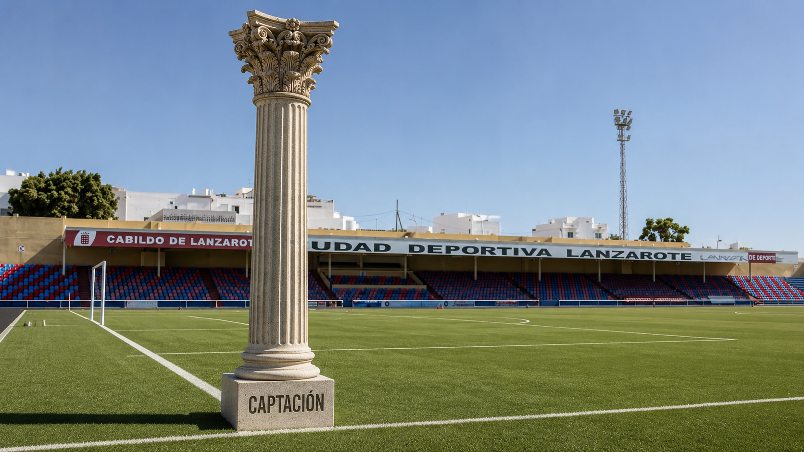
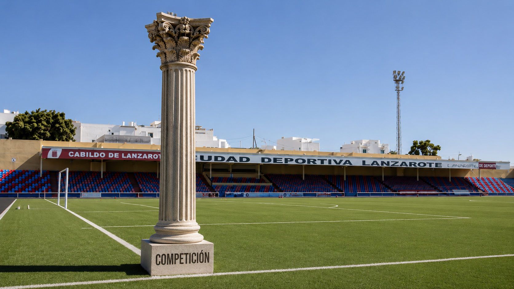
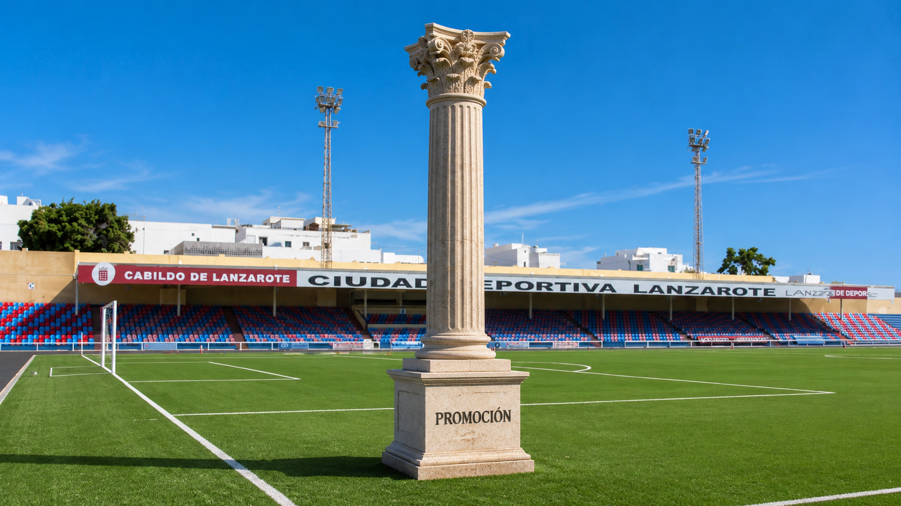
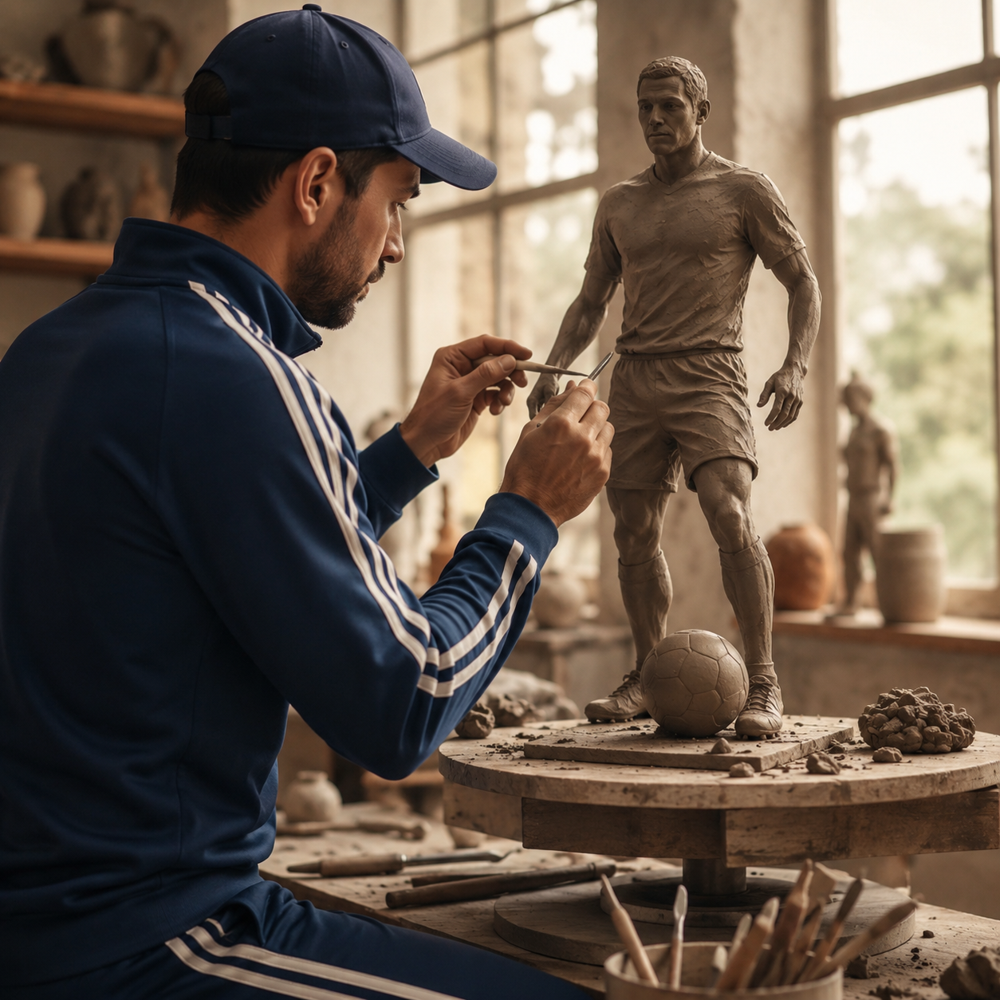
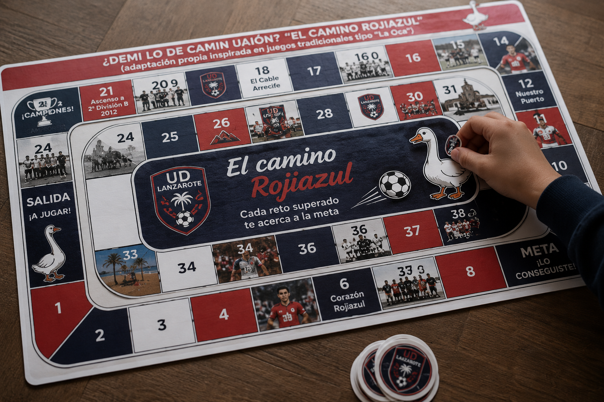
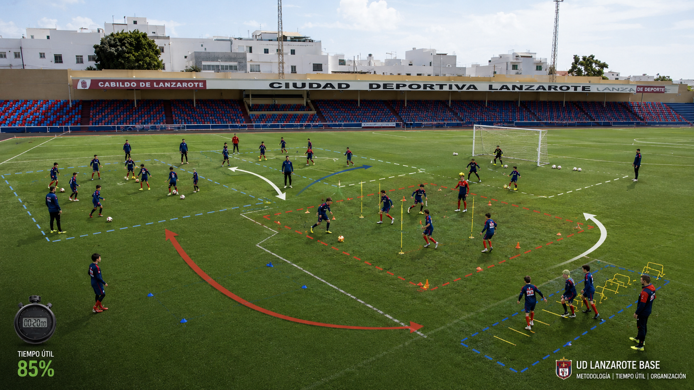

Proyecto deportivo · Cantera 2026–2028
La grandeza se forma en la base.
Y se construye cada día en el entrenamiento.
Accede a cada pilar, metodología y herramienta del proyecto. Esta web no está pensada solo para verla una vez: está pensada para consultarla durante la temporada.

Venimos a ordenar, unificar y construir una forma común de trabajar. No se trata de cambiar todo de golpe. Se trata de crear hábitos claros, sostenibles y compartidos.
La cantera necesita identidad.
La metodología necesita coherencia.
Los entrenadores necesitan apoyo y claridad.
Los jugadores necesitan un entorno estable.
Las familias necesitan sentir que hay orden.
El club necesita que todos caminemos en la misma dirección.
El proyecto no ocurre en un documento. Ocurre en el campo, a través del entrenador. Cada sesión, cada corrección, cada mensaje y cada decisión transmiten cultura.
"El entrenador no solo dirige ejercicios. Dirige cultura."
Cada categoría pertenece a una estructura común. El entrenador lidera su grupo, pero representa una idea colectiva.
Los cimientos que sostienen nuestro modelo formativo. Descuidar uno debilita todo el proyecto.

El entrenador también observa.
La captación no es solo traer jugadores. Es reconocer talento, entender perfiles, detectar necesidades y ayudar a construir el futuro del club. El entrenador no tiene la última palabra, pero su criterio es fundamental porque conoce el nivel del equipo, las necesidades reales y el contexto competitivo.

Seguimiento continuo de partidos, torneos y entrenamientos en toda Lanzarote.
Evaluamos con una ficha de observación unificada para todas las categorías.
El criterio del entrenador se traslada de forma directa y ordenada.
Captación desde la cercanía y la identidad, no solo desde el rendimiento puntual.

Competir para crecer.
La competición es una herramienta formativa, no un fin en sí mismo. Buscamos que cada partido ayude al jugador a enfrentarse a retos reales, gestionar la dificultad, aprender del error y sostener la exigencia.
La dificultad bien gestionada acelera el aprendizaje.
Ganar tiene valor, pero no es el único objetivo.
El entrenador ayuda al jugador a interpretar la competición.
La competición nos muestra qué debemos seguir trabajando.
Crear caminos reales de crecimiento.
La promoción conecta la formación con el siguiente nivel. No se trata solo de subir jugadores por rendimiento puntual, sino de acompañar procesos, detectar madurez, generar oportunidades y preparar al jugador para nuevos contextos de exigencia.

Integración puntual en grupos de mayor nivel.
Coordinación entre entrenadores y comunicación con dirección deportiva.
Acompañamiento continuo del proceso del jugador.
La promoción es un proceso, no un premio aislado.
Cuando el contexto lo permite, para equipos con buena evolución.
No basta con darla: hay que acompañarla.
Una identidad de juego común para todas las categorías. No es una teoría: es lo que se ve en el campo cada fin de semana.
Cada fase incluye principios ofensivos y defensivos, comportamientos por categoría, ejemplos de tareas e indicadores por posición — desarrollados en el módulo interactivo:

El entrenador educa incluso cuando no está explicando. Por muy desarrollada que esté la metodología, el verdadero nexo de unión entre el club y los jugadores es el entrenador.
Alineado con el club, comunicador y exigente desde el respeto.
Dispuesto a cuidar el mensaje y a trabajar en equipo.
Dentro y fuera del campo, en cada gesto y decisión.
"Lo que repite el entrenador se convierte en cultura."
No se trata solo de entrenar más. Se trata de entrenar mejor, con propósito y dirección: qué entrenar, cómo entrenar, cuándo entrenar y por qué entrenarlo, respetando las etapas formativas de cada edad.
Tiempo de calidad para el desarrollo individual, integrado en el entrenamiento colectivo.
Trabajo complementario e individualizado para acelerar el desarrollo del jugador.
Aprendizaje directo desde el fútbol profesional, con referentes reales.
Dentro del entrenamiento colectivo, creamos tiempo de calidad para el desarrollo individual. MIT IN es el formato interno de tecnificación que se desarrolla dentro del horario habitual del entrenamiento, con espacios específicos para lo técnico, táctico y motor que cada jugador necesita mejorar.
Se irá completando durante la temporada con ejemplos semanales y fichas descargables.
Trabajo complementario para acelerar el desarrollo individual. MIT OUT complementa el entrenamiento colectivo con espacios externos de mejora individual — un complemento metodológico, nunca un sustituto del trabajo del equipo.
El referente no solo inspira. También acelera el aprendizaje. MIT PRO incorpora referentes, jugadores profesionales o experiencias reales del fútbol de alto rendimiento para acercar al jugador joven a modelos concretos.

Aprender jugando. Competir aprendiendo. La gamificación transforma objetivos de entrenamiento en retos que generan motivación, repetición, aprendizaje y conexión emocional.
Objetivos claros que mantienen el interés activo.
Uso de la pierna no dominante y hábitos técnicos.
Aprendizaje motor más eficaz en edades tempranas.
Ejemplo tipo tablero: se irá completando durante la temporada.
"El jugador aprende más cuando disfruta el proceso."
La calidad de la sesión empieza antes de que ruede el balón. Entrenar más no siempre significa entrenar mejor.
Material y grupos organizados antes de empezar.
Transiciones rápidas entre tareas.
Cada minuto de sesión cuenta.
Cada grupo con su espacio definido y optimizado.

Evaluar para mejorar, no para señalar. El vídeo y el análisis son herramientas de aprendizaje: objetivan el proceso, aceleran la comprensión del juego y mejoran la toma de decisiones.
Esfuerzo, respeto, compromiso, disciplina, compañerismo, alegría, pertenencia y humildad. Así se aterrizan los valores en el día a día:
"El fútbol es el vehículo, pero las personas son nuestro destino."
La coherencia del club se construye en los detalles. Un tono claro, firme y respetuoso, para que todos trabajemos bajo el mismo criterio.
Puntualidad en cada sesión y partido.
Imagen y vestimenta acordes al club.
Preparación previa de la sesión.
Uso correcto del material y cuidado de instalaciones.
Comunicación clara con las familias.
Comunicación interna con coordinación y reporte semanal.
Respeto a la metodología y a las decisiones del club.
Gestión cuidada del grupo de WhatsApp del equipo.
Cuidado del lenguaje dentro y fuera del campo.
No improvisar sistemáticamente la planificación.
No contradecir públicamente al club.
No usar el equipo como proyecto personal.
"La coherencia del club se construye en los detalles."
Este espacio se irá completando durante la temporada.
La metodología no se construye solo desde un despacho. Se mejora escuchando lo que ocurre cada día en el campo. Si ves una mejora, una dificultad, una idea o una situación que crees que puede ayudar al club, este espacio es para comunicarlo de forma directa y constructiva.
"No buscamos señalar errores. Buscamos mejorar juntos."
Ideas, recursos y contenidos para seguir creciendo juntos. Este espacio lo alimenta Dirección Deportiva durante la temporada, incorporando también propuestas de los entrenadores. No es una biblioteca cerrada: es un espacio vivo.
Ideas para conectar objetivo, tarea, corrección y comportamiento del jugador.
Ver recurso →Reflexión sobre cómo comunicar mejor con el jugador durante la sesión.
Ver recurso →Ejemplo práctico para trabajar finalización dentro del entrenamiento colectivo.
Ver recurso →Ejemplos de comportamientos que reflejan identidad, respeto y compromiso.
Ver recurso →Claves para convertir el análisis en una herramienta de aprendizaje.
Ver recurso →"Lo que uno aprende, puede ayudar a todos."
Dirección Deportiva está disponible para cualquier consulta relacionada con la metodología, el equipo o el proyecto.
"La grandeza se forma en la base."